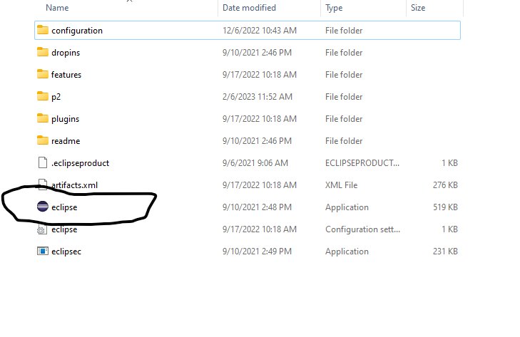

1. List Of
Required Softwares
1. List Of
Required Softwares
- JDK (Java Development Kit) Note: Latest edition is preferred
- Eclipse (2021-9 R)
- Tomcat Server
- MySQL for database
- SQL Yog GUI Client Community edition
2. Installing the Softwares Mentioned Above
Installing JDK
Step 1: Download the latest version of java from below link
Java SE Development Kit 19.0.2Step 2: Right click on the downloaded file and click on open
Step 3: If it asked for permission click on yes
Step 4: Click next
Step 5: Again click on next

It will now start the installation
Step 6: After installation is finished just click on close
Step 7: Navigate to bin directory of java and copy the path.
Open your file explorer
Go to this pc
C drive
Program files
jdk-19
bin
And copy the path by clicking on it
Go to this pc
C drive
Program files
jdk-19
bin
And copy the path by clicking on it
Step 8: Search for edit environment variables in windows search bar and open it
It will open this window
Step 9: Click on new and the paste the bin directory path you have copied just now and then click on ok
Setting Up Eclipse
Step 1: Download eclipse using below link
Eclipse IDE for Enterprise Java and Web DevelopersStep 2: Extract the zip file using winrar. Do not use your window's default extractor
Step 3: Now navigate to the folder you extracted just now. Inside you will find one more folder named eclipse. Open it. Inside there is a application file named eclipse. It is the file you need to run to launch the IDE
 Configuring Tomcat Server in eclipse
Step 1: In the last step you have launched the eclipse and this is the welcome window
Step 2: First Close the welcome window by clcking in this cross
Step 3: Click on Window -> Show view -> Servers
Step 4: Click on this link to add a new server
Step 5: Click on this button to expan the Apache directory
Step 6: Scroll down little bit -> Select tomcat 9 -> Click on next
Step 7: Click on Download and install button
Accept the agreement -> select the default folder whichever it opens and It will start downloading
tomcat.
You can see progress at the bottom right of the window
Wait till it downloads the server
Step 8: Click on finish button
Congretulations!!! You can see that the server is configured successfully
Installing MySQL Database
Installing SQL Yog